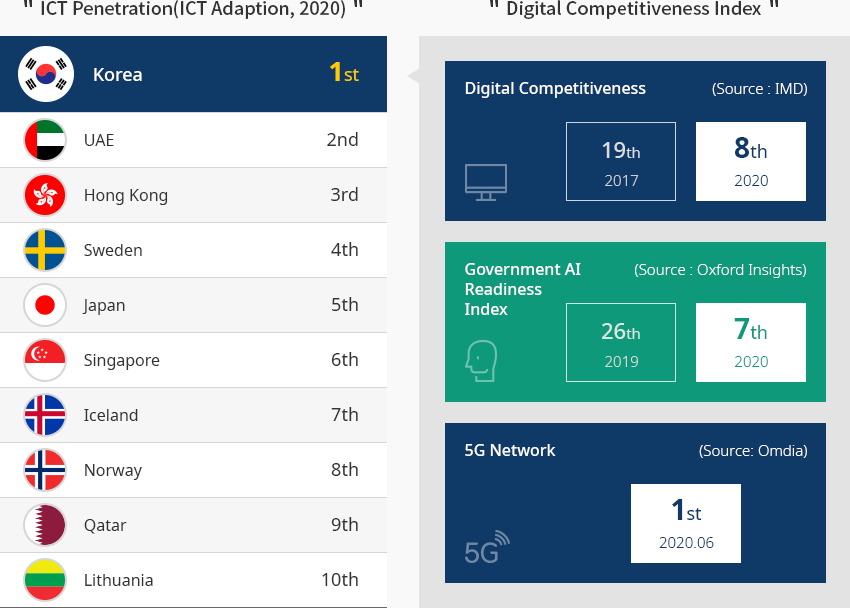

Information and Communications Technology (ICT)
- Home
- Why KOREA
- Industry
- Information and Communications Technology (ICT)
Renewable energy
-
The World’s First and Best IT Powerhouse CloseThe World’s First and Best IT PowerhouseKorea is a global leader in the ICT industry.
Korea was the first country in the world to commercialize CDMA in 1996, LTE-A in 2013, and 5G in 2019.
Korea is evaluated as a global ICT leader based on its high level of ICT related technologies and penetration rate."ICT Penetration(ICT Adaption, 2020)"
- 1st:Korea
- 2nd:UAE
- 3rd:Hong Kong
- 4th:Sweden
- 5th:Japan
- 6th:Singapore
- 7th:Iceland
- 8th:Norway
- 9th:Qatar
- 10th:Lithuania
※ ICT distribution: Evaluation of current high-speed Internet and introduction of new technologies
※ Source: WEF(The World Economic Forum) The Global Competitiveness Report 2020"Digital Competitiveness Index"
- Digital Competitiveness (Source: IMD) 2017 - 19th 2020 -8th
- Government AI Readiness Index (Source: Oxford Insights) 2017 - 26th 2020 - 7th
- 5G Network (Source: Omdia) 2020.06 - 1st
※ Source: 2021 Work Plans, Ministry of Science, ICT and Future Planning Smartphone and network equipment manufacturers, in particular have risen to prominence in the global market. Korea’s mobile communication services are leading global innovation.
Smartphone and network equipment manufacturers, in particular have risen to prominence in the global market. Korea’s mobile communication services are leading global innovation.
Korean smartphone makers are promoting 5G and foldable phones, gaining premium leadership, and at the same time, strengthening the mid to low-end smartphone lineup, maintaining the no. 1 position in terms of global smartphone sales.※ Share of Samsung Electronics’ foldable smartphones (Counterpoint, % (10,000 units)) : (‘20)73(204) → (‘21e)88(792) → (’23e)75(2,100)"Market Share Trend of Top 5 Companies in the Global Smartphone Market"(Unit : %)
Market Share Trend of Top 5 Companies in the Global Smartphone Market Rank, 2015, 2016, 2017, 2018, 2019 Rank 2016 2017 2018 2019 2020 1st SAMSUNG 22.5% SAMSUNG 20.5% SAMSUNG 20.9% SAMSUNG 19.2% SAMSUNG 18.8% 2nd APPLE 15.9% APPLE 14.4% APPLE 14.0% HUAWEI 15.6% APPLE 14.8% 3rd HUAWEI 7.3% HUAWEI 8.9% HUAWEI 9.8% APPLE 12.6% HUAWEI 13.5% 4th OPPO 5.1% OPPO 5.7% XIAOMI 7.3% XIAOMI 8.2% XIAOMI 10.8% 5th vivo 4.6% vivo 4.8% OPPO 6.5% OPPO 7.7% OPPO 8.3%  ※ Source: Gartner (Sales)
※ Source: Gartner (Sales) -
Major Industry Leading the National Economy OpenMajor Industry Leading the National EconomyAs of 2020, the ICT industry accounted for 11.4% (USD 177.5 billion) of the total GDP, driving the growth of the Korean economy. Mobile phones, in particular, are one of Korea’s top 15 export items, accounting for 2.2% of total exports in 2020. The commercialization of 5G service is continuously boosting the sales of the telecommunication service industry.※ Mobile phone exports (USD 100 million) : (‘17)190 → (’18)146 → (‘19)120 → (’20)112
※ Telecommunication service sales performance (KRW trillion) : (‘17)38.0 → (’18)37.3 → (‘19)36.5 → (’20)37.1(Unit : KRW billion)ICT Industry Production (Sales) Rank, Years Rank 2016 2017 2018 2019 2020 ICT Total 4,310,446 4,716,630 5,017,265 4,628,612 4,793,643 Equipment 3,090,158 3,427,552 3,679,382 3,227,288 3,320,840 Service 726,886 748,828 766,745 781,574 808,327 SW 493,402 540,251 571,139 619,750 664,477 ※ Source: Ministry of Science and Technology Information and Communication, ICT Major Items Survey
※ Korean Statistical Information Service (KOSIS) [Go to KOSIS] -
Strengthening 5G Business of Global Companies in Korea OpenStrengthening 5G Business of Global Companies in KoreaGlobal ICT companies that have entered Korea are expanding their 5G related businesses.Ericsson, a Swedish company that has led the telecommunication market since 2G by investing in Korea, is currently increasing investment in 5G R&D jointly with a Korean operator. Finland's Nokia is supporting overseas network quality and performance improvement based on its various experiences in Korea. Nokia provides virtualization and solutions for next-generation network infrastructure, such as 5G.(As of December 2020)Ericsson LG (joint venture of Ericsson and LG Electronics)
- Investor : Ericsson
- Country : Sweden
- Location : Seoul
- Items : Wired/Wireless exchange equipment, transmission equipment, communication system
- Number of employees : 668 (As of December 2019)
- Sales
- ’17year : 2.4 KRW billion
- ’18year : 2.0 KRW billion
- ‘19year : 4.5 KRW billion
Nokia Solution Networks Korea- Investor : Nokia
- Country : Finland
- Location : Seoul
- Items : Telecommunication equipment, system
- Number of employees : 274(As of December 2019)
- Sales
- ’17year : 1.7 KRW billion
- ’18year : 1.1 KRW billion
- ’19year : 4.9 KRW billion
 Furthermore, numerous global companies are investing in 5G, AI, cloud, e-commerce, O2O, games, and video. In line with the era of great digital transformation, investment in e-commerce and online platforms is expected to continue the growth.※ Foreign direct investment in digital new deal (Ministry of Trade, Industry and Energy, Investment Promotion Division, USD 100 million): (H1 2020) 14.5 → (H1 2021) 33.3 (+129.3%)
Furthermore, numerous global companies are investing in 5G, AI, cloud, e-commerce, O2O, games, and video. In line with the era of great digital transformation, investment in e-commerce and online platforms is expected to continue the growth.※ Foreign direct investment in digital new deal (Ministry of Trade, Industry and Energy, Investment Promotion Division, USD 100 million): (H1 2020) 14.5 → (H1 2021) 33.3 (+129.3%)
※ Foreign direct investment in ICT (Ministry of Trade, Industry and Energy, Investment Promotion Division, USD 100 million): (H1 2020) 10.2 → (H1 2021) 31.7(+210.8%)
-
5G+ Strategies and Digital New Deal Open5G+ Strategies and Digital New DealIn April 2019, the Korean government announced the 5G+ Strategy for the early commercialization of 5G and to foster new 5G-based industries. Its aim is to focus investing in 10 key 5G-based industries and five key services, and to promote new 5G+ based industries, and ultimately to occupy 15% of the global market by 2026. The government and public sector will preemptively adopt 5G and build a cooperative structure between the public and private sectors."Ten Key 5G+ Based Industries and Five Key Services"5G
- 10 key industries
- Network
- Next-generation smartphones
- VR·AR devices
- Wearable devices
- Intelligence CCTV
- Future-type drones
- Connected robots
- 5G V2X
- Information security
- Edge computers
- Five key services
- Immersive content
- Smart factories
- Autonomous vehicle
- Smart cities
- Digital healthcare
※ Source: Ministry of Science and ICT, 5G+ Strategy for Realizing Innovative GrowthIn July 2020, the Korean government announced the Korean version of the New Deal and its investment plan to focus on D.N.A. which stands for data, network, and AI. Its goal is to accelerate the use and convergence of data, 5G, and AI across all industries by building a nationwide 5G network and promoting AI convergence projects. Prompt digital transformation, such as the expansion of virtual transactions and education, in the past year contributed to overcoming the COVID-19 crisis and demonstrating a solid recovery trend.In July 2021, the Korean government revised and announced the New Deal 2.0 Strategy in order to preemptively respond to the rapidly changing environment. The government aims to spread digital convergence and the achievements of New Deal 1.0 throughout the economy and society as well as to foster hyper-connected new industries, such as metaverse, cloud, and block chain.※ Digital New Deal financial investment in 2022: (New Deal 1.0) KRW 8.6 trillion → (New Deal 2.0) KRW 8.7 trillion or more
※ Digital New Deal cumulative financial investment by 2025: (New Deal 1.0) KRW 44.8 trillion → (New Deal 2.0) KRW 49 trillion"Digital New Deal 1.0 and New Deal 2.0"Digital New Deal 1.0 and New Deal 2.0 New Deal 1.0 (current) “Economic-based digital transformation promotion”, New Deal 2.0 (revised) “Digital convergence expansion” Digital New Deal New Deal 1.0 (current) “Economic-based digital transformation promotion” Strengthening the D.N.A ecosystem - Data·5G·AI convergence and utilization Promote digitalization of industries
Digital transformation of education infrastructure - Smart schools, online-offline convergence learning
Fostering virtual industries - Virtual medical care, care service infrastructure, support online business of small businesses
SOC digitalization - Digitalize transportation and disaster management, smart industrial complexes, cities, and logistics system
New Deal 2.0 (revised) “Digital convergence expansion” Strengthening the D.N.A ecosystem - Expand my data industry (revision of the Personal Information Act) and support the use of pseudonymous information
- Enact three acts on digital economy transformation
- Establish a joint R&D global cooperation system for 6G
Advancement of virtual (integration) - Early construction of high-performance WiFi for elementary, middle, and high schools
- Operate Dr. Answer Clinic and promote intelligent emergency medical service
- Qualitative advancement of smart stores using smart technologies (IoT, AI, etc.)
Fostering hyper-connected industries, like metaverse - Build an open metaverse platform and support the production of a variety of metaverse content
- Demonstrate 5G/AI-based robot/service convergence to solve social problems
- Promote multi-ministerial large-scale block-chain technology convergence and connection projects
- Discover intelligent IoT service and spread and expand application
SOC Digitization - Expand smart city data hub
※ Source: Korean New Deal 2.0 - 10 key industries
-
Telecommunication Equipment Manufacturing Development in Metropolitan Area, Daegu/Gyeongbuk Area OpenTelecommunication Equipment Manufacturing Development in Metropolitan Area, Daegu/Gyeongbuk AreaIn Korea, ICT clusters are distributed per region. By sector, smartphone clusters are located in the metropolitan area and Daegu/Gyeongbuk area, network equipment clusters in the metropolitan area, and 5G network infrastructure in the metropolitan area and spread throughout the nation.“ ICT Clusters in Korea ”
- Seoul(Guro, Tehran, Sangam, etc): Digital content, ICT, SW: Information convergence parts
- Banwol/Sihwa: electrical and electronic
- Gyeonggi (Hwaseong, Pyeongtaek, Paju, Giheung, Icheon, Pangyo, Suwon): Semiconductor, display, network equipment (Samsung Electronics, SK Hynix, LG Display)
- Incheon: Bio, digital signage, robots (content)
- Chungnam (Cheonan/Asan): Display (Samsung Display, Corning Precision Materials)
- Jeonnam Gwangju: Mining (optical communication, optical information equipment), home appliances(LG Innotek, Kumho HT, OE Solution, Samsung Electronics, Winia Electronics, Carrier)
- Jeju: EV, smart grid
- Gangwon:Multimedia content industry (Chuncheon), medical electronics (Wonju)
- Chungbuk: ICT semiconductors, secondary batteries, etc. (SK Hynix, Dongbu Hitech, LG Chemical, W-SCOPE)
- Sejong: Sejong High-tech Industrial Complex (Sejong Techno Valley)
- Daejeon: Daedeok Special R&D Zone, intelligent robots
- Gyeongbuk: Mobile and smart devices (Gumi, Gyeongsan), electronic parts, displays (Samsung Electronics, LG Electronics, LG Display, LG Innotek)
- Daegu (Seongseo): Mobile, IT Electric and Electronic
- Ulsan: Automobile, shipbuilding, electricity/energy (Samsung SDI)
- Busan: Knowledge-based service and infrastructure (cultural content), Cloud/IOT, marine ICT
※ Source: Korea Electronic Information and Communication Industry Promotion Association


Invest KOREA
ICT PM
KANG HYEONGKON, PARK MIRI
New Industry Promotion Team
T.+82-2-3460-7865, 7861
Recommendation on Locations
Industrial complex information
[Gwangju Metropolitan City Gwangsan-gu, Jeollanam-do Hampyeong County]
Bit-Green Industrial Complex
Click [Go to Detailed Information] to go to the relevant information screen of
Smart K-Factory service of Industrial Complex Corporation.
-
Complex nameBit-Green Industrial Complex
-
Initial designation date2009.09.30
-
Designated area(m2)4,070,692
-
ManagementKorea Industrial Complex Corporation
-
Nearby RailwayHampyeong Station
-
Distance from station(km)30
-
Nearby AirportGwangju Airport
-
Distance from airport(km)20
-
Industrial water Supply capacity(ton/day)17130(㎥/day)
-
Affiliation local governmentGwangju Metropolitan City Gwangsan-gu, Jeollanam-do Hampyeong County
-
Population1,454,154
Industrial complex information
[Jeollabuk-do Gunsan City] Saemangeum District National Industrial
Complex
Click [Go to Detailed Information] to go to the relevant information screen of
Smart K-Factory service of Industrial Complex Corporation.
-
Complex nameSaemangeum District National Industrial Complex
-
Initial designation date2019.08.02
-
Designated area(m2)18,495,346
-
ManagementSaemangeum Development Agency
-
Nearby RailwayGunsan Station
-
Distance from station(km)28
-
Nearby AirportGunsan Airport
-
Distance from airport(km)15
-
Industrial water Supply capacity(ton/day)123077(㎥/day)
-
Affiliation local governmentJeollabuk-do Gunsan City
-
Population267,982
Industrial complex information
[Ulsan Metropolitan City Nam-gu] Ulsan Techno General Industrial
Complex(Ulsan Free Economic Zone)
Click [Go to Detailed Information] to go to the relevant information screen of
Smart K-Factory service of Industrial Complex Corporation.
-
Complex nameUlsan Techno General Industrial Complex(Ulsan Free Economic Zone)
-
Initial designation date2013.06.20
-
Designated area(m2)1,286,977
-
ManagementUlsan Metropolitan City
-
Nearby RailwayTaehwagang Station
-
Distance from station(km)9
-
Nearby AirportUlsan Airport
-
Distance from airport(km)15
-
Industrial water Supply capacity(ton/day)2614(㎥/day)
-
Affiliation local governmentUlsan Metropolitan City Nam-gu
-
Population1,140,310
Industrial complex information
[Gyeongsangnam-do Miryang City] Chunhwa Agricultural Industrial
Complex
Click [Go to Detailed Information] to go to the relevant information screen of
Smart K-Factory service of Industrial Complex Corporation.
-
Complex nameChunhwa Agricultural Industrial Complex
-
Initial designation date2008.07.02
-
Designated area(m2)211,785
-
ManagementGyeongsangnam-do Miryang City
-
Nearby RailwaySangdong Station
-
Distance from station(km)14
-
Nearby AirportGimhae International Airport
-
Distance from airport(km)56
-
Industrial water Supply capacity(ton/day)633(㎥/day)
-
Affiliation local governmentGyeongsangnam-do Miryang City
-
Population105,099
Industrial complex information
[Incheon Metropolitan City Namdong-gu] Namdong National Industrial Complex
(Renewable Business District)
Click [Go to Detailed Information] to go to the relevant information screen of
Smart K-Factory service of Industrial Complex Corporation.
-
Complex nameNamdong National Industrial Complex (Renewable Business District)
-
Initial designation date1980.09.02
-
Designated area(m2)9,504,046
-
ManagementKorea Industrial Complex Corporation
-
Nearby RailwayBupyeong Station
-
Distance from station(km)9
-
Nearby AirportIncheon Airport
-
Distance from airport(km)32
-
Industrial water Supply capacity(ton/day)49081(㎥/day)
-
Affiliation local governmentIncheon Metropolitan City Namdong-gu
-
Population2,943,491
Industrial complex information
[Daejeon Metropolitan City Dong-gu] Haso Eco-friendly General Industrial
Complex
Click [Go to Detailed Information] to go to the relevant information screen of
Smart K-Factory service of Industrial Complex Corporation.
-
Complex nameHaso Eco-friendly General Industrial Complex
-
Initial designation date2012.05.11
-
Designated area(m2)306,703
-
ManagementDaejeon Metropolitan City
-
Nearby RailwayDaejeon Station
-
Distance from station(km)17
-
Nearby AirportCheongju International Airport
-
Distance from airport(km)71
-
Industrial water Supply capacity(ton/day)1300(㎥/day)
-
Affiliation local governmentDaejeon Metropolitan City Dong-gu
-
Population1,469,431